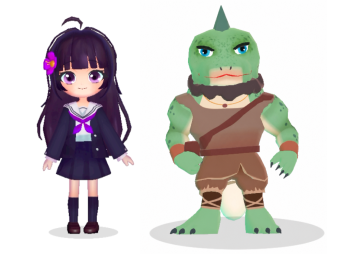
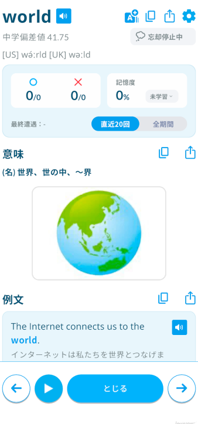
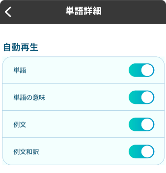

モチスピにみゆ・レックスが登場！
/自動音声読み上げ機能を追加
2026/8/14 16:00
モチスピにみゆ・レックスが登場！
ネイサン先生・ジョニー先生に続いて、みゆ先生・レックス先生とも話せるようになったよ！
マイページ > 学習設定 > 先生を変更
で切り替えてね！

自動音声読み上げ機能を追加
モチタン・モチスピ両方に、自動音声読み上げ機能を追加したよ！
再生ボタンを押すと、単語リストやフレーズリストを読み上げて、ループ再生するよ。ハンズフリーで流し聞き学習が可能になるよ。
読み上げ対象は歯車アイコンから個別にON/OFF可能だから、必要なものを選んでね。

